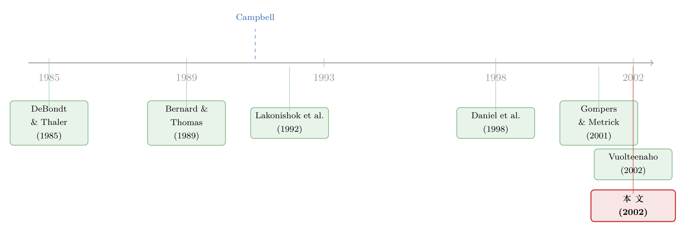

机构真的更聪明吗？——把一笔买卖拆成「基本面」和「情绪」两半来看
本文读的是 Cohen, Gompers & Vuolteenaho (2002, Journal of Financial Economics)：用 Campbell (1991) 的收益分解，把每只股票的回报拆成「现金流消息」和「贴现率消息」两半，再看机构和散户在这两半上各自如何下注。结论是——机构确实站在了「正确」的一边（顺着现金流买、逆着无消息的涨跌卖），但它们用得极度克制，整体只跑赢散户 1.44% 每年。
1 一个老掉牙、却始终没答清的问题
行为金融里有一个被反复验证的现象：股价对公司基本面的好消息「反应不足」(underreaction)。盈余超预期之后，股价会顺着公告的方向继续「漂移」(drift) 好几个月；股利的开始与取消之后，也是同样的拖泥带水。这些事实摆在那儿，谁都看得见。
但真正吵起来的，是它们背后的因。一派人——以 Fama (1998) 为代表——说这不过是样本特定的偶然，是数据挖掘挖出来的幻象；另一派人则忙着搭各种行为模型来解释它（Barberis et al., 1998；Daniel et al., 1998；Hong and Stein, 1999）。两边各执一词，谁也说服不了谁。
于是一个自然的问题浮出水面：如果真有人「反应不足」，那到底是谁？ 是市场上所有人都一起慢半拍，还是有一部分聪明钱看穿了、并趁机赚了另一部分人的钱？
这恰恰是本文要回答的。Cohen、Gompers 和 Vuolteenaho 的切入点很巧：他们不去直接争论「漂移是不是真的」，而是去看交易——当好消息来的时候，机构和散户之间，股票是从谁手里流向了谁。如果机构系统性地从散户手里买入好消息的股票，那么（在「机构更精明」这一先验下）就等于多了一份独立证据，说明反应不足是真的有人在慢、而不是风险或数据挖掘在作怪。
2 真正关键的一步：先把「现金流消息」量出来
但这里藏着一个所有同类研究都绕不过去的坑。
你想问「机构是不是顺着好消息买」，前提是你得先有一把尺子，能量出「好消息」到底有多少。最朴素的做法，是直接拿当期的会计盈利——比如净资产收益率 (return on equity, ROE)——当作现金流消息的代理。可问题在于，当期的会计数字根本不等于关于未来所有现金流的全部信息。过去的股价、机构持股的变化，本身都还在预测着公司未来的盈利能力。用一个残缺的代理去衡量「好消息」，结论就会被带偏。
本文给这个坑画了张图。它把股票按「现金流代理」和「股票收益」双向分组，看每一格里机构持股的变化。
- 当用朴素的 ROE 当代理时（Panel A）：控制住 ROE 之后，机构似乎仍然偏好买那些收益更高的股票。照这么读，机构好像在「追高」，甚至在把价格往基本面之上推。
- 可一旦换上 VAR 算出来的现金流消息（Panel B）：同样控制住现金流消息，机构与当期收益之间的边际关系，竟然从正号翻成了负号。
这是全文第一个、也是最要紧的反转：用一把更准的尺子，「机构在追高」的证据被直接抹掉了。换句话说，之前看起来像「追涨」的行为，其实只是 ROE 这把破尺子量漏了的那部分现金流信息。
这正是方法论真正「付费」的地方。本文的现金流消息不是当期或过去现金流里的信息，而是把股票收益、盈利能力、账面市值比、机构持股比例这一整套状态变量里关于「未来所有现金流」的信息，全部汇总成的一个数。（关于「用现金流代理去解释收益会漏掉什么」，可对照《R² 说的不是「现金流」》。）
3 模型：怎么把一笔收益劈成两半
那么这把尺子是怎么造出来的？核心是 Campbell (1991) 的收益分解。这一节稍微硬一点，但它是理解全文的钥匙，值得一步步走。
3.1 恒等式：收益必由两种消息驱动
从一个会计恒等式出发。令 \(r_t\) 为对数股票收益，\(e_t\) 为干净盈余 (clean-surplus) 下的对数 ROE，\(\rho = 0.97\) 是一个略小于 1 的贴现常数，\(\kappa\) 为近似误差。Campbell 把「未预期到的收益」拆成两块：
$$ r_t - E_{t-1} r_t = \Delta E_t \sum_{j=0}^{N} \rho^{j} e_{t+j} \;-\; \Delta E_t \sum_{j=1}^{N} \rho^{j} r_{t+j} + \kappa $$
这里 \(\Delta E_t\) 表示「从 \(t-1\) 到 \(t\) 期望的变化」，即 \(E_t(\cdot) - E_{t-1}(\cdot)\)。式子的直觉很朴素：今天股价的意外波动，要么是因为大家改变了对未来盈利的预期（第一项），要么是因为大家改变了对未来要求回报的预期（第二项）。
把这两块分别定义为现金流消息 \(N_{cf}\) 与贴现率消息（又称预期收益消息，expected-return news）\(N_{r}\)：
$$ N_{cf,t} \equiv \Delta E_t \sum_{j=0}^{N} \rho^{j} e_{t+j} + \kappa, \qquad N_{r,t} \equiv \Delta E_t \sum_{j=1}^{N} \rho^{j} r_{t+j} $$
于是恒等式坍缩成一句话——未预期收益 = 现金流消息 − 贴现率消息：
注意那个减号：要求回报上升（\(N_r>0\)）会压低今天的价格。所以当一只股票涨了，逻辑上只有两种可能——要么后面真有高现金流跟上（\(N_{cf}>0\)），要么这个涨幅迟早得跌回去（\(N_r>0\)，暂时性的高估）。
3.2 用 VAR 把消息估出来
光有恒等式还不能算数，得有办法把这两种消息从数据里估出来。本文让每家公司的状态向量 \(z_{i,t}\) 服从一个一阶向量自回归 (vector autoregression, VAR)，其中 \(z_{i,t}\) 的第一个元素就是市场调整后的对数收益：
$$ z_{i,t} = \Gamma\, z_{i,t-1} + u_{i,t} $$
只要有了系数矩阵 \(\Gamma\)，剩下的就是线性代数。令 \(e1' \equiv [1\ 0\ \cdots\ 0]\)，再定义 Campbell 那个漂亮的简化向量：
$$ \lambda' \equiv e1'\, \rho \Gamma (I - \rho \Gamma)^{-1} $$
那么贴现率消息就是 \(\lambda' u_{i,t}\)，而现金流消息是 \((e1' + \lambda')\, u_{i,t}\)。这里有个值得停一下的细节：Campbell 的方法是先直接算贴现率消息，再把现金流消息当作「未预期收益 + 贴现率消息」倒推出来的残差。这看似绕，却带来一个意想不到的稳健性——它「把疑点利益给了现金流消息」：除非 VAR 真的看到了收益在反转，否则它会把整个收益都归给现金流消息。这意味着，本文若真要犯错，也是偏向于少发现反应不足，而不是无中生有。
3.3 反应过度还是不足：一个回归系数
有了消息，怎么定义「反应过度/不足」？本文延续 Vuolteenaho (2002)，把它归结为一个极简的回归系数（星号表示市场调整后的量）：
$$ r^{*}_t = a + b\, N^{*}_{cf,t} + w_t $$
- \(b > 1\)：好消息来了，股票反而变得更被高估（或更少被低估）——这是反应过度 (overreaction)。
- \(b < 1\)：好消息来了，股票平均而言变得更少被高估（或更被低估）——这是反应不足。
- \(b = 1\)：不偏不倚，正确反应。
举个数字直觉：一只 100 美元的股票，传来「未来所有现金流都高 15%」的消息（风险和折现率不变）。正确的反应是涨 15%、到 115 美元。但如果它平均只涨到 110 美元，\(b<1\)，那就有理由叫它「反应不足」。
这个双变量定义，比 DeBondt and Thaler (1985) 那种「从长期负自相关推断反应过度」的单变量做法要干净得多。Campbell (1991) 早就指出，单变量时间序列无法同时识别贴现率消息的方差和这个回归系数——任何暂时性的错误定价（哪怕纯噪声）都能造出长期负自相关。本文的双变量框架还能把「反应不足」和「延迟的反应过度」区分开来，这是很多旧方法做不到的。
4 于是反转出现：机构站对了边，却站得小心翼翼
把上面的机器开动起来，本文的三个核心发现就出来了。
第一，机构顺着现金流消息买。 根据 VAR，25% 的现金流消息，会带来机构买入大约 2% 的流通股。考虑到平均一只股票的现金流消息标准差高达 47%、机构持股比例为 36%，这个反应在经济上是显著的。换句话说，好消息来时，机构确实在从散户手里接货——它们在利用反应不足。
第二，机构不是在玩动量。 这是最关键的「证伪」。如果机构只是单纯的价格动量追随者，那价格涨了它们就该买。可数据说的恰恰相反：当股价在没有任何现金流消息的情况下涨了 25%，机构反而卖出约 5% 的流通股给散户。也就是说，对那种「无基本面支撑的纯涨跌」，机构是逆着做的。它们买的不是「涨」，而是「涨得有道理」的那部分。（这一点与《动量到底是谁干的？》里把成交单按主体拆开的思路异曲同工。）
第三，机构的精明在「小盘坏消息」上失灵。 机构持股对现金流消息的反应，在「小盘股的坏消息」这一格里最弱。而偏偏小盘股、尤其是坏消息时的小盘股，反应不足最严重。这两件事撞在一起，指向一个朴素的解释：机构在交易小盘股、特别是做空它们时，面临着外生的约束（章程、流动性、卖空限制），所以它们想利用却利用不动。
到这里，故事本该是「聪明钱完胜」。可本文偏要再泼一盆冷水，而这盆冷水才是它真正耐人寻味的地方。
机构虽然方向对，幅度却小得可怜。机构持股比例与 VAR 估出的长期异常收益相关性是 0.64——说明它们手里的信息质量，相对学术界已知的那些可预测性现象而言，其实相当高。可与此同时，整个机构组合的权重与 CRSP 市值加权组合的权重相关性高达 0.923，两者的收益相关性更是 0.998。结果就是：机构整体只比散户每年多赚 1.44%（还是交易成本和其他费用之前的毛收益）。
一句话概括这个悖论：机构知道得很多，却用得极少。它们手握高质量信息，却死死抱住市值加权指数不放，几乎不敢偏离。
为什么这么克制？本文给了三种解释，且都不轻易下结论：（1）机构也犯和散户一样的错，只是程度轻一些；（2）机构看得见机会，但被 Shleifer and Vishny (1997) 所说的那类「套利的极限」捆住了手脚——开放式结构让它们极度在意跟踪基准，成文或不成文的规则又限制了持仓；（3）机构本身是异质的，专注各自板块的基金，加总起来未必构成一个全局最优组合。
5 文献脉络
把这篇论文放回它生长的那条藤上，线索其实很清楚。
最早的一头，是 DeBondt and Thaler (1985) 用长期收益反转点燃的「反应过度」之争，和 Bernard and Thomas (1989, 1990) 在盈余公告后漂移 (post-earnings-announcement drift) 上立下的「反应不足」铁证。这些事实逼出了两类理论模型——Barberis et al. (1998)、Daniel et al. (1998)、Hong and Stein (1999)——试图用投资者心理来统一解释欠反应与过度反应。

与此同时，另一条支流在研究机构到底在干什么。Lakonishok et al. (1992a)、Grinblatt et al. (1995)、Wermers (1999, 2000) 等人发现机构买入与同期收益正相关；Daniel et al. (1997)、Gompers and Metrick (2001) 进一步指出机构超配短期高预期收益的股票。但这些大多停在「短期可预测性」或「同期相关」上。
真正的方法论支点是 Campbell (1991) 的收益方差分解，以及 Vuolteenaho (2002) 把它落到公司层面、证明现金流消息与贴现率消息正相关（即反应不足）的工作。本文站在这两条支流的交汇处：它借 Campbell-Vuolteenaho 的尺子，把「机构交易」这件事从「同期相关」升级到「对永久成分 vs 暂时成分分别下注」的精细刻画，从而给「谁在反应不足」这个问题，添了一份来自交易方向的独立证据。（顺带一提，机构在消息公开前就站队的更直接证据，可见《财报还没发，机构已经站好了队》。）
6 评论与延伸（Q&A + 研究方向）
(a) 几个可能的疑问
Q：现金流消息是个「估出来」的残差，会不会量错了反而把结论造出来？
这正是 Campbell 倒推法的好处。它把疑点利益给了现金流消息——除非 VAR 真看到收益反转，否则收益都算作现金流消息。所以测量误差的方向是让本文更难、而非更易发现「机构顺现金流买」。作者还在附录里把干净盈余 ROE 直接加进状态向量、用直接法重算，结论稳健。
Q：这和「机构在追动量」到底有什么本质区别？
关键在那个「无消息的涨跌」实验。纯动量者看到价格涨就买；而本文发现机构对「没有现金流支撑的 25% 上涨」是卖 5% 流通股。它们顺的是基本面，不是价格本身。这恰恰把动量解释证伪了。
Q：既然机构信息质量这么高（与长期异常收益相关 0.64），为什么只跑赢 1.44%？
因为它们几乎不偏离市值加权指数（组合权重与 CRSP VW 相关 0.923，收益相关 0.998）。高质量信息被极度保守地使用了。原因可能是跟踪误差约束、章程限制（套利的极限），或机构内部的异质性。本文没有强行裁决，而是并列了三种可能。
Q：把「贴现率消息全部归因于错误定价」这步，可信吗？
这是本文最依赖先验的一步。作者假设「公平折现率在横截面上对所有股票相等」，于是市场调整后的贴现率消息只能来自定价误差。但他们也坦诚：换个先验，完全可以把它解释成公司特有风险驱动的折现率变动。结论的「行为」色彩，部分是这个假设给的。
Q：为什么偏偏在「小盘坏消息」上机构反应最弱？
因为那里反应不足最强，本该最有利可图，可机构恰恰在交易/做空小盘股时受外生约束最严。机会与约束撞在一起，结果是想利用却动不了——这反过来又解释了为什么小盘坏消息的漂移最顽固。
Q：现金流消息「外生」这个工作假设，会不会太强？
作者明确把它当作工作假设：收益和持股结构不反过来导致预期现金流。在此假设下，机构顺现金流买不会构成「不稳定的正反馈」。但若现金流本身被持股或价格内生影响，这层「无害」的结论就要打折扣。这是识别上最该被追问的一处。
(b) 几个可能的研究问题与提案
1. 把这套分解搬到公司债市场。 【经济故事】债券价格同样可拆成「信用基本面消息」与「利差/流动性折现率消息」。问：机构债券基金是顺着信用基本面买、还是顺着利差波动追？谁在为信用反应不足买单？ 【可行性】中。需要 TRACE 成交 + 机构持仓（13F 不含债券，需用基金持仓披露或保险公司 NAIC 数据），识别难点在于把债券收益干净地分解成两半。doable，但分解的稳健性是硬骨头。
2. 外资 vs 本土机构，谁更顺现金流？ 【经济故事】本文把世界二分为「机构 vs 散户」。但「机构」内部也异质。外资持有人常被指为「热钱/追涨」，可如果按本文的尺子量，他们也许同样是顺基本面、逆纯涨跌的。 【可行性】高（在有逐笔投资者身份的市场，如韩国、芬兰）。可直接复刻本文的双向分组。已有《外资真有「信息劣势」吗？》等工作铺路，识别相对干净。
3. 「约束」假说的直接检验。 【经济故事】本文猜机构克制是因为跟踪误差约束。能不能找到一个外生放松约束的事件（如基金章程修改、卖空禁令解除），看机构对现金流消息的反应是否随之变陡？ 【可行性】中。需要约束变化的准自然实验 + 持仓面板。难在找到足够干净、足够多的约束变动事件。
4. 小盘坏消息漂移与机构进入的因果。 【经济故事】本文发现小盘坏消息处机构反应最弱、漂移最强。若某政策降低了做空小盘股的成本，漂移是否收窄？这能把「约束→反应不足」的链条钉死。 【可行性】中高。可借 Reg SHO 试点之类的卖空成本冲击做 DiD，被解释变量是分组后的漂移幅度。识别较扎实。
7 我的判断
这篇论文的贡献，不在于「发现了反应不足」——那早有定论——而在于它换了一个主体的视角：把同一个收益，劈成永久与暂时两半，再看是谁在两半上分别下注。这个角度让「机构 = 聪明钱」这个含糊的直觉，第一次有了可量化的、方向明确的刻画：机构顺基本面、逆纯涨跌，方向是对的；但它们克制到几乎与指数无异，于是「精明」并没有兑现成「业绩」。这个「知道得多、用得少」的悖论，比任何单边结论都更有意思，也更接近真实世界里机构投资者的处境。
我对识别最大的保留，集中在两处。其一是那个「市场调整后的贴现率消息 = 错误定价」的先验——它把整篇文章的「行为」解读撑了起来，可作者自己也承认，换成「公司特有风险驱动的折现率变动」同样讲得通。其二是「现金流消息外生」这个工作假设：一旦机构交易反过来影响了基本面预期（这在现实里并非不可能），「机构无害、甚至稳定市场」的温和结论就需要重新掂量。此外，全样本只有 23,501 个公司-年、跨 1983–1998 共 16 年，且严重依赖 VAR 设定，对小盘股那一格的结论尤其敏感。
我接下来最想看到的，是把这套「永久 vs 暂时」的分解，搬到信息环境更透明、投资者身份可逐笔识别的现代数据上（逐笔订单、债券 TRACE、外资标记），并配上一个能外生改变机构约束的实验——只有那样，才能把「机构本可以、却被绑住了手」这句话，从一个合理的猜测，变成一个被钉死的因果。
参考文献
Barberis, N., Shleifer, A., Vishny, R. (1998). A model of investor sentiment. Journal of Financial Economics 49, 307–343.
Bernard, V., Thomas, J. (1989). Post-earnings-announcement drift: delayed price response or risk premium? Journal of Accounting Research 27, 1–36.
Bernard, V., Thomas, J. (1990). Evidence that stock prices do not fully reflect the implications of current earnings for future earnings. Journal of Accounting and Economics 13, 305–340.
Campbell, J. (1991). A variance decomposition for stock returns. Economic Journal 101, 157–179.
Cohen, R., Gompers, P., Vuolteenaho, T. (2002). Who underreacts to cash-flow news? Evidence from trading between individuals and institutions. Journal of Financial Economics 66, 409–462.
Daniel, K., Grinblatt, M., Titman, S., Wermers, R. (1997). Measuring mutual fund performance with characteristic-based benchmarks. Journal of Finance 52, 1035–1058.
Daniel, K., Hirshleifer, D., Subrahmanyam, A. (1998). Investor psychology and security market under- and overreactions. Journal of Finance 53, 1839–1885.
DeBondt, W., Thaler, R. (1985). Does the stock market overreact? Journal of Finance 40, 557–581.
Fama, E. (1998). Market efficiency, long-term returns, and behavioral finance. Journal of Financial Economics 49, 283–306.
Gompers, P., Metrick, A. (2001). Institutional investors and equity prices. Quarterly Journal of Economics 116, 229–260.
Hong, H., Stein, J. (1999). A unified theory of underreaction, momentum trading, and overreaction in asset markets. Journal of Finance 54, 2143–2184.
Lakonishok, J., Shleifer, A., Vishny, R. (1992a). The impact of institutional trading on stock prices. Journal of Financial Economics 32, 23–43.
Shleifer, A., Vishny, R. (1997). The limits of arbitrage. Journal of Finance 52, 35–55.
Vuolteenaho, T. (2002). What drives firm-level stock returns? Journal of Finance 57, 233–264.
Wermers, R. (1999). Mutual fund herding and the impact on stock prices. Journal of Finance 54, 581–622.